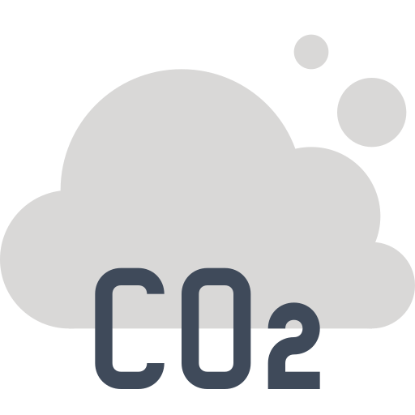

Falta de saneamento básico, favelização, incêndios e/ou queimadas.
A intersecção entre as comunidades ciganas, a falta de saneamento básico e ausência de moradia adequada revela um panorama complexo de exclusão social e vulnerabilidade. São questões que revelam a confluência de questões sociais, culturais e ambientais no Brasil. As comunidades ciganas, frequentemente invisibilizadas na sociedade, enfrentam desafios significativos que se agravam pela precariedade das condições de vida e pela ausência de políticas públicas desenhadas e direcionadas às pessoas romanis. Este texto aborda alguns fatores que impactam a vida das populações ciganas, considerando que as condições de saúde variam em diferentes contextos e destacando a necessidade de intervenções sociais e políticas.
A falta de acesso a serviços de saneamento básico, como água potável, esgoto e coleta de lixo, é uma questão que afeta muitas comunidades ciganas pelo mundo. Em 2021, a Fundação Europeia para a Melhoria das Condições de Vida e Trabalho, indicou que uma significativa parte da população cigana vive em condições que não garantem a saúde e a dignidade, com cerca de 62% sem acesso adequado ao saneamento. No Brasil, encontramos um quadro ainda mais grave, com uma situação particularmente crítica em acampamentos informais, onde a infraestrutura é precária ou inexistente.
Sobre o saneamento básico, é importante destacar:
Clique na seta ao lado para visualizar
O crescimento urbano desordenado, a ausência de planejamento e a falta de políticas públicas agravaram a segregação territorial e ampliaram as desigualdades. O processo de urbanização e o aumento populacional intensificaram desafios como a expansão descontrolada das cidades, a poluição e a carência de infraestrutura de saneamento, impactando especialmente as regiões periféricas, onde reside um contingente significativo das comunidades ciganas. Assim, as cidades, antes associadas a melhores condições de vida e saúde, estão se tornando ambientes insalubres devido à degradação urbana, ao aumento da pobreza e a outras ameaças à saúde.
Para resolver essas questões é importante:
- Investir em infraestrutura e na formulação e implementação de políticas públicas voltadas para a universalização do saneamento.
- Repensar o espaço urbano para que o crescimento econômico e o desenvolvimento humano ocorram de forma integrada, garantindo acesso aos serviços públicos.
- Envolver a população na gestão dos resíduos sólidos, em parceria com o poder municipal, para promover a conscientização sobre os danos causados pelo lixo.
- Adotar estratégias integradas e abordagens multidisciplinares para enfrentar os problemas relacionados ao saneamento básico.
Além disso, é importante destacar os pontos a seguir:
-
Moradia
Condições térmicas precárias, umidade, presença de mofo e falta de ventilação, aumentam o risco de doenças respiratórias e outras condições de saúde.
-
Reciclagem
O tratamento de resíduos sólidos é essencial para evitar problemas como enchentes e a proliferação de vetores de doenças, como moscas, ratos e baratas.
-

Poluição do ar
Um problema crescente, com implicações na saúde respiratória da população urbana, sendo uma das principais preocupações das cidades em expansão.
Correlacionar o saneamento e as condições de moradia com o histórico de ocupação urbana possibilita investigar a falta de saneamento nas localidades onde estão as comunidades ciganas. Muitas famílias vivem em habitações improvisadas, sem acesso a água potável ou sistemas de esgoto. Isso resulta em um aumento significativo de doenças transmissíveis, como diarreia e doenças respiratórias, que são exacerbadas por condições insalubres. A precariedade do saneamento também está ligada à falta de serviços de limpeza pública e à proximidade de lixões, como observado em algumas comunidades ciganas.
Fortemente ligados à natureza, os ciganos preservam aspectos culturais dependentes dessa relação e a degradação ambiental impacta significativamente na saúde e nas práticas culturais. A injustiça climática e o risco ambiental são conceitos que ajudam a compreender a complexidade enfrentada por famílias romanis.
Ao longo da história, os povos ciganos enfrentaram a exclusão no acesso à terra, resultando em um estilo de vida nômade para muitos deles. A partir das décadas de 1970 e 1980, muitos começaram a se estabelecer em áreas periféricas das cidades, vivendo em acampamentos que frequentemente careciam de serviços básicos como água, eletricidade e coleta de lixo. Além disso, por estarem localizados em áreas vulneráveis, como encostas e margens de rios, essas comunidades são mais suscetíveis a desastres naturais relacionados ao clima.
Os desafios enfrentados pelas comunidades ciganas em relação ao saneamento básico são frequentemente exacerbados por fatores sociais como preconceito e discriminação. Muitas vezes, essas comunidades são invisibilizadas nas políticas públicas, resultando em uma falta de atenção às suas necessidades específicas. A especulação imobiliária e o racismo institucional também contribuem para a marginalização dos ciganos, dificultando ainda mais o acesso a serviços essenciais.(FIOCRUZ, 2020; ONU, 2016).
As comunidades ciganas que se encontram em áreas favelizadas enfrentam uma série de desafios, como falta de infraestrutura, gerando problemas de saúde e segurança; preconceito e discriminação, dificultando o acesso a políticas públicas e serviços sociais; inadequação laboral, resultando em dificuldades para obter meios para o sustento.
Considerando a grande diversidade e heterogeneidade entre os grupos ciganos, observa-se que as comunidades mais afetadas pertencem em geral ao grupo calon, principalmente no Nordeste. Pesquisas em três diferentes Estados demonstram a importância em se tratar o tema como prioritário nas relações ciganos com o Poder Público:
Conta com cerca de 2.500 pessoas e, apesar de viverem em um ambiente familiar e com expressiva união comunitária, a maioria está em situação de extrema vulnerabilidade social. Há inúmeras carências sociais: falta de acesso aos meios educacionais formais, moradias em casas de taipa sem saneamento básico, falta de assiduidade nos serviços de limpeza pública, dificuldades quanto à obtenção de documentações civis e malefícios à saúde provenientes do lixão da cidade.
A comunidade cigana calon de São Gabriel demandou o direito à permanência no espaço-território que ocupam há mais de 30 anos no bairro de São Gabriel, em Belo Horizonte, já que a falta de regularização resultava na ausência de endereço oficial e, consequentemente, dificuldade para frequentar escolar, além de acesso negado à água, saneamento básico e energia elétrica. Após uma longa luta, os ciganos obtiveram uma certidão de reconhecimento de posse expedida pela Superintendência de Patrimônio da União no Estado de Minas Gerais, algo ainda em caráter transitório. O caso é emblemático, pois representa a primeira vez que uma reivindicação de reconhecimento de direitos territoriais por famílias Calon foi baseada no arcabouço jurídico-institucional dos Povos e Comunidades Tradicionais (PCT).
São ciganos que vivem na linha da pobreza enfrentando a falta de saneamento básico, educação e acesso à saúde. Com baixos índices de escolaridade, documentação incompleta e sem vínculo empregatício, encontram-se à margem da sociedade em um mundo consumista que explora e marginaliza aqueles desprovidos de recursos. Atualmente, a maioria dos calons, especialmente os do Nordeste, vive em condições de extrema pobreza. Muitas famílias enfrentam situações precárias, sem moradia própria, em meio ao lixo e sem acesso a infraestrutura básica.
Fonte: DOLABELA (2003)
PEREIRA, CARVALHO, PEREIRA (2019)
SIQUEIRA (2012)
Percebe-se que a ausência de moradia adequada nas comunidades ciganas brasileiras gera uma série de problemas interligados que afetam diretamente a saúde e o bem-estar dessas populações. A falta de saneamento básico, como acesso a água potável e sistemas de esgoto, agrava as condições insalubres, resultando em um aumento de doenças transmissíveis e comprometendo a qualidade de vida. Além disso, a relação intrínseca dos povos ciganos com a natureza é fundamental para a preservação da cultura romani, e a degradação ambiental, exacerbada pelas mudanças climáticas, impacta desproporcionalmente essas comunidades, que frequentemente são as menos responsáveis por essa destruição. A pobreza, aliada à discriminação e ao preconceito, contribui para as péssimas condições de moradia e saúde enfrentadas por segmentos das populações ciganas, perpetuando um ciclo de exclusão social que limita suas oportunidades e direitos. Assim, os desafios enfrentados por essas comunidades não são apenas questões isoladas, mas sim um reflexo da relação entre desigualdade social, racial e ambiental.